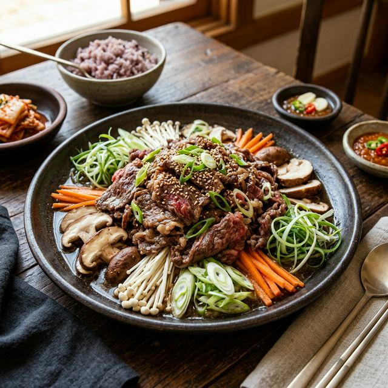
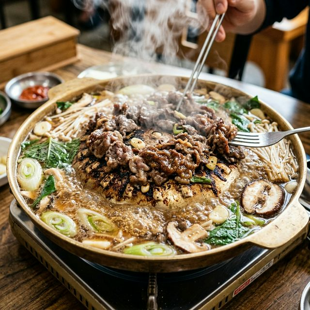
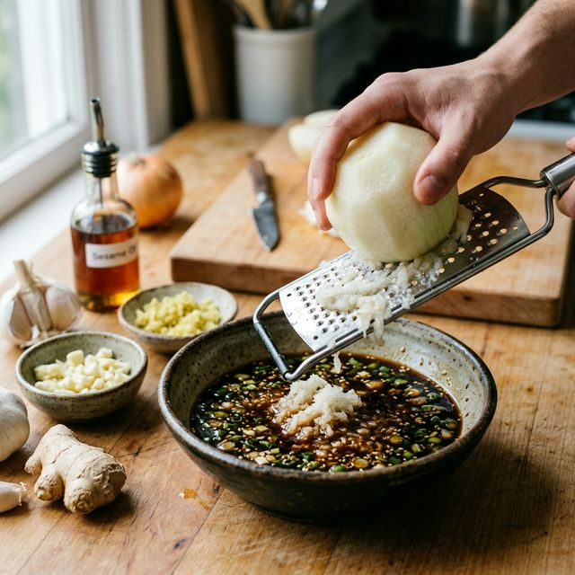

한우 불고기 황금레시피: 배즙과 양파를 활용한 장시간 연육 공정 및 감칠맛 소스 비율
"격조 높은 한국의 맛, 육질과 풍미를 모두 잡은 한우 불고기의 정석!"
한국을 대표하는 음식인 불고기는 그만큼 친숙하지만, 한우 본연의 고소한 풍미와 입 안에서 녹는 듯한 부드러움을 완벽하게 구현하기는 생각보다 쉽지 않습니다. 오늘 소개해드릴 '프리미엄 한우
불고기'는 셰프들의 비법인 설탕 선버무림 기법과 자연 과일을 활용한 정밀 연육 공정을 통해, 고기 특유의 잡내는 제거하고 감칠맛은 극대화한 레시피입니다. 특별한 날 상차림은
물론, 일상에서의 고급스러운 한 끼를 위한 명품 불고기 비법을 지금 공개합니다.
1. 한우 불고기의 미학적 가치와 영양학적 기대 효과
한우 불고기는 얇게 저민 고기 사이사이로 달콤 짭조름한 양념이 배어들어 남녀노소 누구나 좋아하는 선호도 1위의 한식입니다. 특히 한우는 수입육에 비해 올레인산 함량이 높아 특유의 고소한 풍미가
뛰어나며, 단백질과 철분, 아연이 풍부해 성장기 어린이나 기력 회복이 필요한 성인들에게 최고의 보양식이 됩니다.
단순히 맛있는 음식을 넘어, 불고기는 조화의 미학을 담고 있습니다. 고기와 함께 들어가는 버섯, 파, 양파 등 다양한 채소들은 고기의 산성도를 중화시켜주며 비타민과 식이섬유를 보충해 주어 영양학적으로
완벽한 균형을 이룹니다. 인위적인 화학 조미료 대신 배와 양파라는 천연 재료를 사용함으로써 깊고 은은한 단맛을 내는 것이 이 레시피의 핵심입니다.
또한, 예로부터 불고기는 귀한 손님을 맞이할 때 내놓던 정성의 상징이었습니다. 고기를 한 장 한 장 낱장으로 떼어내 정성껏 재우는 과정은 요리하는 이의 마음을 그대로 전달합니다. 눈으로 먼저 즐기고
맛으로 감동하는 한우 불고기, 그 품격 있는 맛의 세계로 빠져보시기 바랍니다.

고급스러운 풍미와 깔끔한 장식이 돋보이는 한우 불고기 메인 요리 / AI 제작 이미지
2. 고품격 한우 불고기 재료 준비 매뉴얼
성공적인 불고기를 위해서는 무엇보다 원재료의 선택과 계량이 중요합니다. 신선한 한우와 황금 비율의 양념을 준비해 주세요.
| 구분 |
재료명 |
용량 및 비중 |
| 주재료 |
한우 불고기용 (목심 또는 앞다리살) |
600g (두께 1.5~2mm) |
| 연육 재료 |
배(즙), 양파(즙), 설탕 |
배 1/2개, 양파 1/2개, 설탕 2큰술 |
| 기본 양념 |
진간장, 다진 마늘, 청주(또는 맛술) |
간장 6큰술, 마늘 1.5큰술, 술 3큰술 |
| 풍미 향상 |
참기름, 후추, 생강즙 |
참기름 1큰술, 후추 약간, 생강즙 1작은술 |
| 부재료 |
표고버섯, 대파, 양파, 당근 |
버섯 3개, 파 1대, 양파 1/2개, 당근 약간 |
3. 감칠맛 극대화! 셰프의 양념장 비법 비율
불고기 양념의 황금 공식은 '간장 1 : 설탕 0.5'를 기본으로 하되, 고기의 잡내를 잡아주는 생강과 마늘의 조화에 있습니다. 저염을 선호하신다면 간장의 양을 줄이는
대신 액젓 1작은술을 추가해 풍미를 보정할 수 있습니다.
준비한 배 1/2개와 양파 1/2개는 강판에 갈아 면보에 짜서 맑은 즙만 사용합니다. 건더기를 그대로 넣으면 고기를 볶을 때 지저분해지고 쉽게 탈 수 있기 때문입니다. 이 즙에 간장 6큰술, 다진 마늘
1.5큰술, 청주 3큰술, 올리고당 1큰술(윤기용), 후추를 섞어 만능 불고기 소스를 완성합니다.
마지막에 넣는 참기름은 처음부터 간장에 섞기보다 고기를 버무린 후 가장 마지막에 둘러주는 것이 향을 보존하는 비결입니다. 양념장은 만든 직후보다 10분 정도 상온에서 숙성시켜 재료들이 서로 충분히
어우러졌을 때 최상의 맛을 발휘합니다.
4. 완벽한 식감을 위한 고기 전처리 및 연육 공정
고기를 다루는 첫 단계는 핏물 제거입니다. 물에 씻지 말고 키친타월로 앞뒤를 꾹꾹 눌러 핏물을 꼼꼼히 제거해야 누린내가 나지 않습니다. 그다음, 뭉쳐 있는 고기를 한 장씩
정성스럽게 낱장으로 떼어내어 준비합니다.
여기서 첫 번째 비결이 나옵니다. 고기에 간장을 넣기 전, 준비한 설탕 2큰술과 배즙 4큰술을 먼저 넣고 조물조물 버무려 10분간 둡니다. 단맛 분자는 짠맛 분자보다
크기가 크기 때문에 설탕을 먼저 넣어야 고기 조직 속으로 깊게 침투하여 연육 작용을 확실히 돕고, 나중에 넣는 간장의 짠맛이 겉돌지 않게 합니다.
10분 후, 고기가 선분홍색으로 촉촉해지면 준비해둔 나머지 양념장을 넣고 다시 한번 가볍게 버무립니다. 이때 너무 세게 치대면 고기 식감이 떨어질 수 있으니 부드럽게 마사지하듯 양념을 입혀주는 것이
좋습니다. 전처리가 끝난 고기는 냉장고에서 최소 30분, 가급적 1시간 이상 숙성시킵니다.

천연 과일즙과 설탕 밑간으로 고기를 부드럽게 만드는 연육 과정 / AI 제작 이미지
5. 조리 단계 1: 팬 달구기와 채소 투입 타이밍
숙성된 고기를 꺼내 조리를 시작합니다. 팬을 강하게 달군 후 식용유를 아주 살짝만 두릅니다. 팬이 충분히 뜨거워졌을 때 고기를 넓게 펴서 올립니다. 고기가 칙- 소리를 내며 익어야 육즙이 빠져나가지
않고 가둬집니다.
고기의 겉면이 살짝 익어갈 즈음, 단단한 채소인 당근과 표고버섯부터 넣습니다. 이 채소들은 익는 시간이 고기와 비슷하여 함께 볶았을 때 채소의 향이 고기에 자연스럽게 스며듭니다. 고기는 젓가락을 이용해
뭉치지 않게 계속 풀어가며 볶아주는 것이 포인트입니다.
중강불을 유지하며 빠르게 볶아내는 것이 핵심입니다. 너무 낮은 온도에서 오래 볶으면 수분이 과도하게 빠져나와 고기가 질겨지고 국물이 탁해질 수 있습니다. 팬의 소리와 고기의 색 변화에 집중하며 최적의
타이밍을 잡아보세요.
6. 조리 단계 2: 수분 밸런스와 최종 간 조절
고기가 70% 정도 익었을 때 양파와 대파를 넣습니다. 양파와 대파는 열에 약하며 금방 숨이 죽기 때문에 후반부에 넣어야 아삭한 식감을 살릴 수 있습니다. 이때 팬 바닥에 수분이 너무 없다면 물이나
멸치 육수 1/4컵을 넣어 자박한 상태를 만들어줍니다.
국물이 보글보글 끓어오르며 채소들의 당분이 녹아 나올 때 최종 간을 확인합니다. 싱겁다면 간장을 소량 추가하고, 너무 짜다면 남겨둔 배즙을 더해 풍미를 조절합니다. 당면을 넣고 싶다면 미리 불려둔
당면을 이 타이밍에 넣어 국물을 머금게 합니다.
전체적으로 고기와 채소가 양념과 조화롭게 어우러지면 불을 끕니다. 잔열로도 충분히 익으므로 고기에 붉은 기가 가시면 즉시 조리를 멈추는 것이 부드러운 불고기를 만드는 마지막 팁입니다.
7. 조리 단계 3: 풍미의 완성, 참기름과 통깨 마무리
불을 끈 상태에서 준비한 참기름 1큰술을 빙 두릅니다. 열기가 가시기 전 참기름을 넣어야 고소한 향이 고기 표면에 코팅되듯 입혀집니다. 뒤이어 통깨를 넉넉히 뿌려 시각적인 완성도와 씹는 맛을
더합니다.
그릇에 담을 때는 고기를 가운데 높게 쌓고, 주변으로 버섯과 대파 등 채소들을 보기 좋게 둘러줍니다. 국물은 고기 위로 살짝 끼얹어 촉촉한 상태를 유지하게 합니다. 보기 좋은 떡이 먹기도 좋다는
말처럼, 정갈한 담음새는 식사의 만족도를 높여줍니다.
완성된 불고기의 윤기를 확인해 보세요. 배즙과 설탕의 선버무림 덕분에 인위적이지 않은 고급스러운 광택이 흐를 것입니다. 이제 따뜻한 밥 한 그릇과 함께 한우의 진한 풍미를 만끽할 준비가 끝났습니다.

강한 화력에서 육즙을 가두며 빠르게 볶아내는 불고기 조리 현장 / AI 제작 이미지
8. 전문가의 팁: 망치지 않는 비법과 대체 재료 가이드
불고기를 만들 때 흔히 하는 실수 중 하나가 키위나 파인애플을 과하게 넣는 것입니다. 이 과일들은 연육 작용이 너무 강력해 고기를 곤죽으로 만들 수 있으므로, 가정용으로는 **배나 양파**가 가장
안전합니다. 배가 없을 땐 시판용 '갈아 만든 배' 음료 100ml를 사용해도 훌륭한 대안이 됩니다.
또한, 고기를 볶을 때 생기는 거품은 핏물 전처리가 부족할 때 주로 발생합니다. 조리 중간에 거품이 올라오면 수저로 살짝 걷어내야 깔끔한 맛을 유지할 수 있습니다. 남은 불고기는 소분하여 냉동 보관할
수 있지만, 채소를 넣기 전 양념된 고기 상태로 얼리는 것이 해동 후 식감이 훨씬 좋습니다.
단맛을 더 건강하게 내고 싶다면 설탕 대신 매실청이나 꿀을 사용해 보세요. 하지만 꿀은 고온에서 향이 변할 수 있으므로 조리 마지막 단계에 넣는 것이 비결입니다.
9. 영양 요약 및 어울리는 음식/주류 페어링 추천
한우 불고기는 훌륭한 단백질 공급원이며, 채소와의 조화로 비타민 보충에도 탁월합니다. 하지만 지용성 비타민 A가 풍부한 **상추나 깻잎**과 함께 쌈을 싸 먹으면 영양 흡수율이 더욱 높아지며, 깻잎의
독특한 향은 고기의 미세한 잡내까지 잡아주어 찰떡궁합을 이룹니다.
주류 페어링으로는 한우의 고소한 지방 맛을 깔끔하게 씻어줄 수 있는 **청주나 매실주**를 추천합니다. 와인과 함께 즐기고 싶다면 탄닌이 너무 강하지 않은 라이트한 바디감의 '피노 누아'나, 적당한
산도가 있는 '메를로' 계열의 레드 와인이 불고기의 달큼한 간장 양념과 아주 잘 어울립니다.
입가심으로는 시원하고 개운한 동치미나 나박김치를 곁들이면 최고의 한정식 코스가 완성됩니다. 정성 가득한 한우 불고기와 함께 소중한 사람들과 따뜻하고 행복한 미식의 시간을 보내시기 바랍니다.
#한우불고기
#불고기황금레시피
#소고기불고기양념
#연육작용비결
#명절음식추천
#집들이음식메뉴
#아이반찬추천
#한식레시피
#배즙요리
#프리미엄집밥